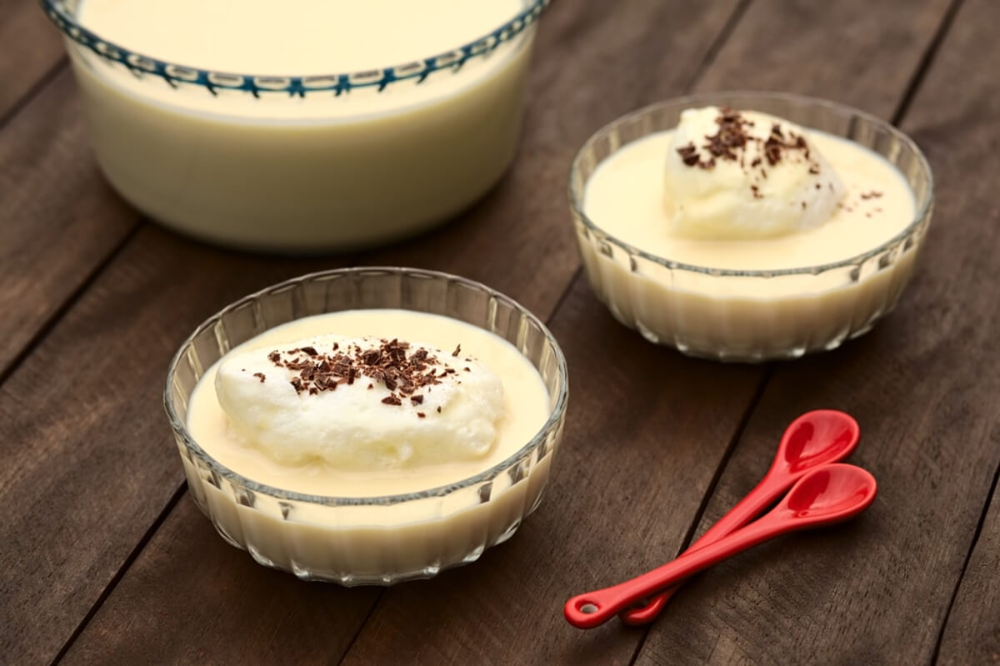

Hozzávalók:
tejsodóhoz:
- 1 l tej
- 4 tojás
- 100 g cukor
- 1 vaníliarúd vagy vaníliás cukor ízlés szerint
- 1 Csipet só
tojáshabhoz:
- 4 tojásfehérje
- Csipet só
- 50 g cukor
karamellhoz:
- 100 g cukor
- 3 ek evőkanál víz
Elkészítés:
- Először elkészítjük a tejsodót. Egy lábasban melegítsük fel a tejet a vaníliarúddal vagy vaníliás cukorral, és forraljuk fel.
- Közben egy tálban válasszuk szét a tojásokat. A sárgáját keverjük össze a cukorral.
- Amikor a tej felforrt, öntsük apránként a tojásos cukoros keverékre, folyamatosan kevergetve.
- Főzzük közepes lángon, állandó keverés mellett, amíg besűrűsödik. Ezután hagyjuk kihűlni.
- Közben készítsük el a tojáshabot. Egy tálban verjük fel a tojásfehérjéket a csipet sóval, majd fokozatosan adjuk hozzá a cukrot, és verjük kemény habbá.
- Egy másik lábasban készítsük el a karamellt. Melegítsük fel a cukrot és a vizet közepes lángon, kevergetve, amíg aranyszínűre karamellizálódik.
- Öntsük a karamellt egy tál aljára vagy tálkákba.
- Kanalazzuk a kihűlt tejsodót a karamellra.
- Tekerjük gombócokat a tojáshabból és helyezzük a tejsodó tetejére.
- Díszíthetjük a tetejét mandula forgácsokkal vagy színes cukordarával.
- Hagyjuk hűlni a madártejet a hűtőben legalább egy órán át.
- Miután megdermedt és összeállt, tálaljuk hidegen.